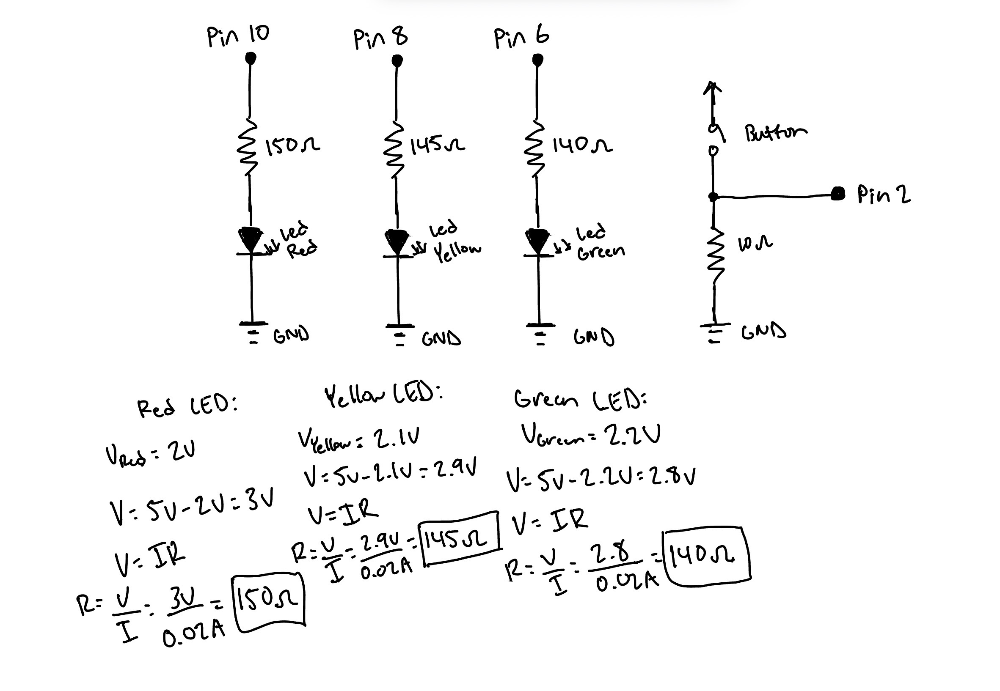
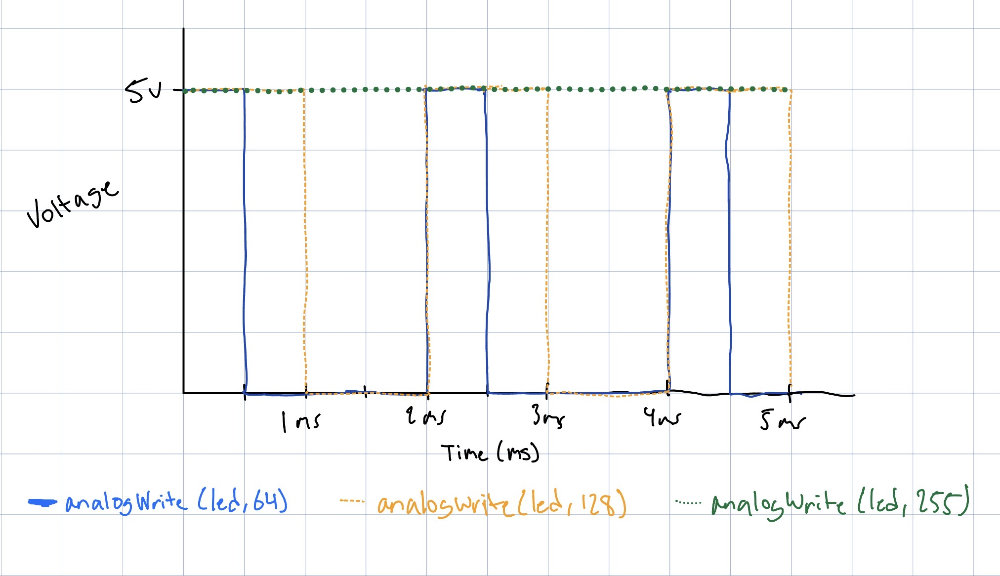

This is the circuit I created using three LEDs and a button.
For this Assignment, I created a "red light, green light" toy/controller. When the button is pressed,
the green LED stays on for a random amount of time and then fades out. The yellow LED then blinks as
a warning before the red LED turns on.
My Schematic:

Schematic of circuit. I calculated the minimum resistance for each LED at a current of 20 mA and
resistances ranged from 140 to 150 ohms. Because any larger value is safe, I just used 220 ohm resistors
all around.
My Code:
// Define button pin connection
const int buttonPin = 2;
// Define LED pin connections
const int ledGreen= 6;
const int ledYellow = 8;
const int ledRed = 10;
// How bright the fading LED is, in this case ledGreen
int brightness = 255;
// how many points to fade the LED by
int fadeAmount = 5;
void setup() {
// Declare button pin (2) to be an input
pinMode(buttonPin, INPUT);
// Declare LED light pins to be an output
pinMode(ledGreen, OUTPUT);
pinMode(ledYellow, OUTPUT);
pinMode(ledRed, OUTPUT);
// Start with the red LED on ("stop" state)
digitalWrite(ledRed, HIGH);
// Random number generator which will be needed later
randomSeed(analogRead(A0));
}
void loop() {
// If the button is pressed
if (digitalRead(buttonPin) == HIGH) {
// Turn the red LED off
digitalWrite(ledRed, LOW);
// Reset the brightness to 255 or full before each loop
brightness = 255;
// Turn the green LED on at full brightness, ("go" state)
analogWrite(ledGreen, brightness);
// Stay green for a random amount of time, between 3000 and 10000 ms
delay(random(3000, 10000));
// Fading the green light
while (brightness >= 0) {
analogWrite(ledGreen, brightness);
// Lower the brightness for next time through the loop
brightness = brightness - fadeAmount;
// Wait for 30 ms to see the dimming effect
delay(30);
}
// Blink the yellow LED 5 times before turning red ("warning" state)
for (int i = 0; i < 5; i++) {
// Turn the yellow LED on
digitalWrite(ledYellow, HIGH);
// Keep it on for 300 ms
delay(300);
// Turn the yellow LED off
digitalWrite(ledYellow, LOW);
// Keep it off for 300 ms
delay(300);
}
// Turn the red LED back on ("stop")
digitalWrite(ledRed, HIGH);
// Wait here while the button is still held down so the sequence doesn't restart by itself
while (digitalRead(buttonPin) == HIGH) {
delay(10);
}
}
}
The Operation:
Demo of my circuit!
Additional Questions:
1: Draw a chart where the X axis is time and the Y axis is voltage. Draw 3 lines representing the voltage across an LED with analogWrite(led, 64), analogWrite(led, 128), and analogWrite(led, 255).

2: If all your LEDs were on simultaneously, what would the total current draw be? Is this above or below the total Arduino current draw limits? If all your LEDs were on, how long would your circuit run if powered by a 1200 mAh battery?
Assuming a typical current of I = 20 mA, the total draw would be 60 mA or 0.06 A. This is below the total Arduino current draw limits of 150 mA.
3 LEDs x 20 mA = 60 mA
Thus considering total current I = 60 mA, the circuit would run for about 20 hours on a 1200 mAh battery.
Runtime = 1200 mAh / 60 mA = 20 hours
3: Measure and record the actual voltage across one of your LEDs when it's on. How does this compare to the theoretical forward voltage for your LED color?
When measuring the voltage across the red LED in my circuit, I recorded a value of 1.95V when it was on.
This is consistent with the theoretical forward voltage of a red LED which is 2V or in the range of
~1.8V – 2V.
AI Use Statement
I used Claude to help me implement an embedded youtube video on my webpage, to show a demo of my circuit.
Prompt: How do I implement an embedded Youtube video in HTML?
Output: On YouTube, click Share, then Embed, and copy the code it gives you. It looks like this: